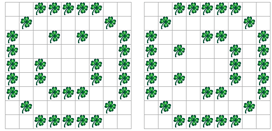
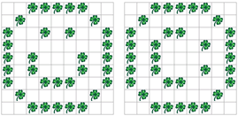

 
Schreiben Sie ein Programm, das die Welt um 90° nach links bzw. um 90% nach rechts dreht.
Ein paar Hinweise für die Lösung:
boolean[][] neueWelt = new
boolean[world.getSizeX()][world.getSizeY()]; Um das zu üben, kopieren
Sie zunächst einfach die bestehende Welt in neueWelt rein, und ersetzen
dann die Welt durch die Werte in neueWelt (also noch ohne Drehen). So
sind Sie sicher, dass das Schreiben und Lesen der Welt und des neu
erstellten Arrays funktioniert.Testen Sie Ihr Programm an Welten verschiedener Grössen (gerade und ungerade Anzahl Spalten bzw. Zeilen).